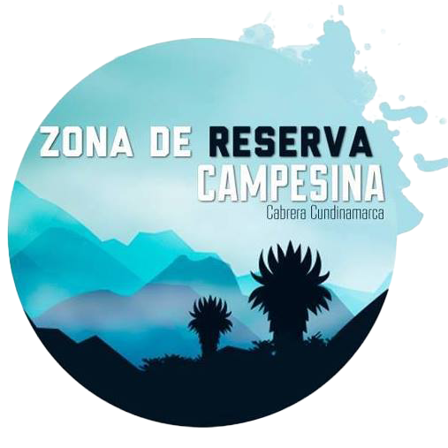

La Zona de Reserva Campesina de Cabrera se ubica mayoritariamente en la cuenca del río Sumapaz. Uno de sus afluentes más importantes es la Quebrada Negra.
Puedes activar o desactivar las capas de veredas y ríos usando el control en la esquina superior derecha del mapa. También puedes cambiar entre diferentes tipos de mapa base. 📍 Haz clic en los marcadores para ver las imágenes.